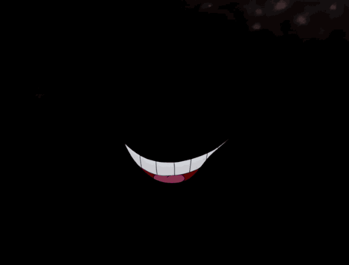
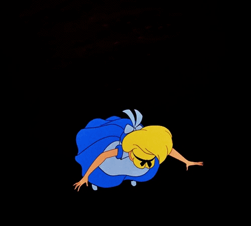

Oh silly girl....always chasing rabbits and talking to cats who smile far too wide.
Tell me....Child....When you look through the looking glass what do you see? What madness and lunacy will you encounter?
Whatever you see and whomever you meet. My dear you must remeber to wake up from that world whimzy and madness, and return to that reality subdued by logic and reason. For logic and reason are the things that keep one safe from unhingged creativty of lunacy. Wake up my dear for if you don't you will simply............continue to fall.
© 2025 Intro to HTML